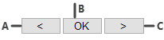

")
Inhaltliches Ändern des eingebetteten Dokuments.
·Die Anwendung, mit der das Dokument erstellt worden ist, muss auf dem Computer installiert sein, damit es im zugehörigen Programm bearbeitet werden kann.
·Mit dieser Funktion bearbeiten Sie das in der AKT-Zeichnung eingebettete Dokument und nicht das Original-Dokument.
·Die Bearbeitung eines Dokuments, das mit ISBCAD 2018 oder früher eingefügt worden ist, ist nicht möglich. Eine entsprechende Meldung wird Sie darauf hinweisen. Fügen Sie in diesem Fall das Dokument erneut ein.
·Wird nach dem Ändern ein Unterschied in der Seitenzahl festgestellt, gehen Änderungen am Dokument verloren, wie z. B. einzelne verschobene oder im Maßstab geänderte Seiten.
Ändern von Grafiken
Bei Grafiken muss der entsprechenden Dateiendung (z. B. .png, .jpg etc.) eine Standardapp (z. B. Adobe Photoshop) zugeordnet werden, um diese bearbeiten zu können. Ein Bild-Betrachter (Viewer) kann trotz der Zuordnung als Standardapp nicht zum Öffnen einer Grafik verwendet werden.
1.Dokument ändern
§Klicken Sie das Dokument an. [Welches Dokument].
-Die zugehörige Anwendung wird mit dem Inhalt gestartet. ISBCAD wird weiterhin im Hintergrund ausgeführt.
-Wenn die Anwendung, die gestartet werden soll, bereits mit dem Dokument geöffnet ist, erhalten Sie eine Meldung. Schließen Sie in diesem Fall die Anwendung, z. B. Word. Achten Sie darauf, alle Instanzen des Programms zu schließen. Wechseln Sie anschließend wieder zu ISBCAD und klicken das zu ändernde Dokument in der Zeichnung erneut an.
§Nehmen Sie die notwendigen Änderungen vor.
§Nach der Bearbeitung speichern und schließen Sie das Dokument.
Der Dialog Dokument einfügen wird geöffnet. Die Änderungen im Dokument wurden übernommen und die Seiten, die in der Zeichnung vor der Änderung eingefügt waren, sind selektiert.
2.Dokument anpassen
§Fügen Sie Seiten der Auswahl hinzu oder wählen Sie das komplette Dokument aus.
Einzelne Seiten aus- oder abwählen:§Klicken Sie die Seiten an, die Sie einfügen möchten. Ausgewählte Seiten erhalten einen blauen Rand. Um eine Seite abzuwählen, klicken Sie eine blau umrandete Seite erneut an. Die Auswahl wird aufgehoben.
Alle Seiten auswählen:§Klicken Sie im oberen linken Dialogbereich im Seitenfilter auf
Seiten über den Seitenfilter auswählen:§Sie können mit dem Seitenfilter einen Seitenbereich eingeben, der eingefügt werden soll. Geben Sie zwischen der Anfangs- und Endzahl eines Seitenbereichs einen Bindestrich ein. Trennen Sie einzelne Seiten oder Seitenbereiche durch ein Komma. Beispiel:
Eingefügt werden die Seite 2, die Seiten 6 bis 9 und die Seite 12. Alle übrigen Seiten werden beim Einfügen ignoriert. |
 , um die Dropdown-Liste zu öffnen, und wählen Sie die Option [
, um die Dropdown-Liste zu öffnen, und wählen Sie die Option [§Wenn Sie die Seiten ausgewählt haben, die Sie einfügen möchten, klicken Sie im Dialog auf OK.
Die gewählten Seiten werden an den Cursor gehängt. Falls sich die Seitenzahl nicht geändert hat, wird das Dokument sofort an der ursprünglichen Stelle abgelegt und die Aktion ist abgeschlossen.
3.Seiten anpassen und anordnen
§Geben Sie optional einen Skalierungsfaktor ein, wobei der Faktor 1 oder 0 der Originalgröße entspricht. [Faktor eingeben].
Alternativ: Übernehmen Sie den Faktor, den Sie beim Einfügen des Dokuments eingegeben haben, mit Rechtsklick.
§Bestätigen Sie den Faktor mit der Eingabetaste.
|

§Bei mehreren Seiten geben Sie die Anzahl der Spalten direkt ein oder nutzen Sie die Schaltflächen unterhalb der Abfrage. [Anzahl Spalten].
Die Vorschau wird nach jeder Angabe angepasst. Sie können die Spaltenanzahl auch per Tastatur eingeben. Wenn Sie die Darstellung angepasst haben, bestätigen Sie mit Rechtsklick, der Eingabetaste oder klicken Sie auf OK. Die nächste Abfrage wird aktiv.
Alternativ: Übernehmen Sie die Spaltenanzahl, die Sie beim Einfügen des Dokuments eingegeben haben, mit Rechtsklick.
 A. Anzahl verringern; B. Eingabe bestätigen; C. Anzahl erhöhen |
4.Dokument platzieren
§Wählen Sie unter Lage, ob das Dokument in der Ebenenstruktur im Vorder- oder Hintergrund eingefügt werden soll.
Option |
Ebene |
|
-8 |
|
7 |


§Platzieren Sie das Dokument abschließend mit einem Linksklick auf der Zeichnung.
Zugehörige Aufgaben:
Zugehörige Referenzen: